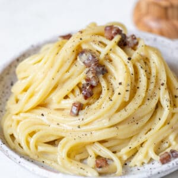
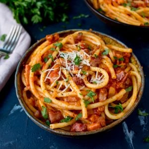
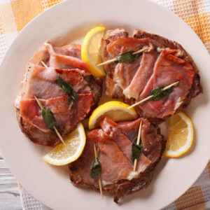
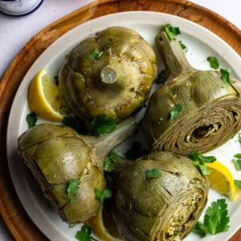
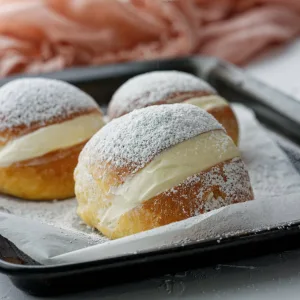
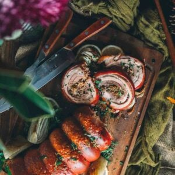

Famous Food

Carbonara
pasta made with eggs, guanciale,
Pecorino Romano cheese, and black pepper

Cacio e Pepe
pasta made with Pecorino
Romano cheese and black pepper

Amatriciana
pasta made with tomato sauce,
guanciale, and Pecorino Romano cheese

Saltimbocca alla Romana
veal cutlets topped with prosciutto and sage,
cooked in a white wine and butter sauce
Osso Buco alla Romana
braised veal shanks cooked with tomatoes,
onions, carrots, and celery

Carciofi alla Romana
artichokes cooked with garlic,
mint, and parsley
Fiori di Zucca
fried zucchini blossoms stuffed with ricotta
cheese and herbs

Maritozzo
a sweet bread roll
filled with whipped cream

Porchetta
roast pork seasoned with garlic,
rosemary, and other herbs
Restaurants
La Pergola
This three Michelin-starred restaurant
located on the top floor of the Rome Cavalieri hotel,
offering breathtaking views of the city.
It's known for its haute cuisine, impeccable service, and extensive wine list.

Roscioli
This restaurant, wine bar, and gourmet food shop
located in the heart of Rome and is renowned for its high-quality ingredients
particularly its cured meats and cheeses.
It's a popular spot for locals and tourists alike.
Armando al Pantheon
This historic restaurant has been serving traditional Roman cuisine since 1961.
Located near the Pantheon, it's known for its classic dishes
such as amatriciana, cacio e pepe, and saltimbocca alla romana.
Extremly popular amongst tourists.
Da Enzo Al 29
This cozy trattoria in the Trastevere neighborhood
is popular with locals and tourists alike.
It's known for its traditional Roman dishes,
particularly its pasta dishes, which are made fresh daily.
Antico Arco
This Michelin-starred restaurant
located in the Gianicolo neighborhood and is known for its modern Italian cuisine,
particularly its seafood dishes.
It also has a rooftop terrace offering stunning views of the city.

Il Pagliaccio
The restaurant has earned numerous accolades including
three Michelin stars and a ranking on the World's 50 Best Restaurants list
The restaurant is known for its innovative tasting menus,
which are designed to showcase the flavors and textures of Italy.